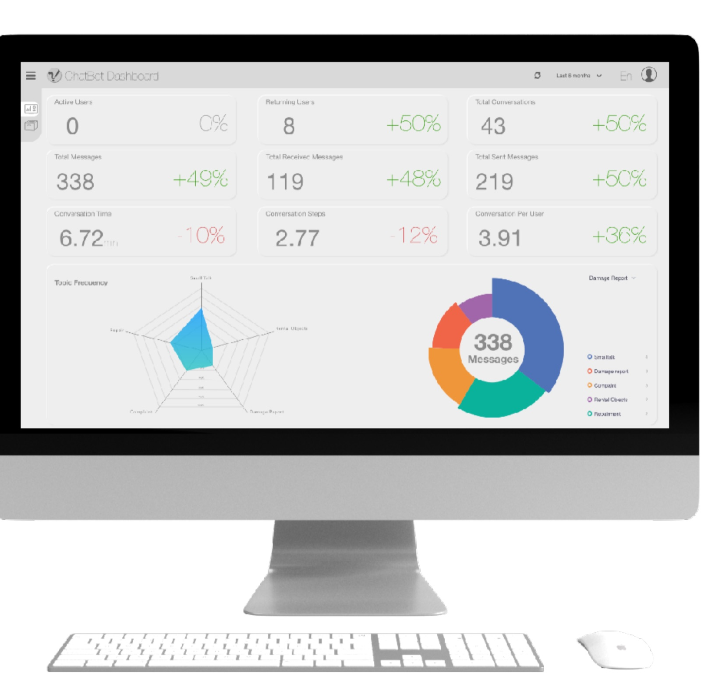

Work / Conversational UI / Chatbot + Dashboard
Athena: both sides of a conversation
A complete conversational system for apartment living: a chatbot that gets residents from problem to solution with almost no typing, and a client dashboard that turns thousands of those conversations into decisions for property owners.

A chatbot for people who hate chatting with bots
Athena assists apartment residents whenever something in the flat goes wrong, a leak, a broken heater, an appointment with the painter. The enormous body of qualitative data we gathered said something blunt: users do not want to spend time chatting with a bot, and they do not want to type.
So the design respects that. Athena leads with tappable problem categories, offers concrete appointment slots as buttons, and gives elegant, direct answers with minimal effort demanded from the user. The conversation is the interface, but typing is almost never the input.
- Category shortcuts (water, electricity, …) replace open-ended “How can I help?” prompts.
- Structured replies: date pickers, confirmations, quick-reply chips, keep exchanges short.
- Direct answers end conversations fast; a good support chat is a brief one.
The research verdict was humbling: nobody wants to talk to our bot. That insight designed the product.research synthesis, Athena

Turning chat logs into decisions
Every resident conversation is also a data point. The client dashboard presents the KPIs between users and the chatbot that apartment owners need to monitor: the majority problems residents face, chat logs for review, and the bot’s behavior over time.
We conducted many interviews with residency owners to understand which data would actually help them serve their residents, then I designed the interaction and UI after translating that collective interview and usability-test data into requirements.
- Problem clustering surfaces what most residents struggle with, not just ticket counts.
- Time travel lets owners scroll back to any period and retrieve the relevant data.
- Language switching and dark mode adapt the tool to international teams and long sessions.
One system, two audiences, zero friction
Designing both halves of Athena meant the resident experience and the owner experience reinforce each other: the less residents have to type, the cleaner the structured data that reaches the dashboard, and the better owners can fix the problems that caused the chats in the first place.